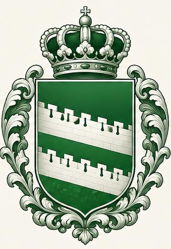

История проекта velezland уходит корнями в туманное прошлое.
Сайт "погас" в 2016 году. Восстановлен в 2026-ом.
Содержание - только личные наблюдения автора.
Если имеете что-то свое и желаете дополнить - пожалуйста.
Ваши комментарии и предложения принимаю на почту:
velezland.47@gmail.com..
(только, две точки после com уберите).
Viktor